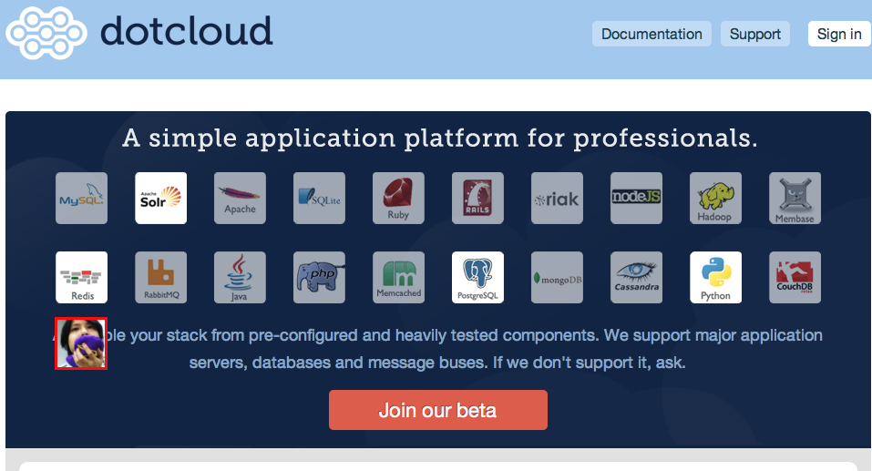

つまり

xaicron Yokohama.pm #7 (2011-05-13)

miyagawa さんが使えるようになりました
$ easy_install dotcloud $ dotcloud create nekokak $ dotcloud deploy --type perl nekokak.www
とかやるといろいろあって、おもちゃ箱ができる。
かんたんですね。
詳しくはログイン後のチートシートを読んでね♡
とりあえず簡単なので NoPaste 的なアプリを動かしてみる
use strict;
use warnings;
use Plack::Request;
use Plack::Response;
use Text::Xslate;
use DBIx::Connector;
use Router::Simple;
use Encode qw(decode_utf8 encode_utf8);
my $router = Router::Simple->new;
$router->connect('/', {action => 'index'});
$router->connect('/create', {action => 'create'}, {method => 'POST'});
$router->connect('/{id:[1-9]\d*}', {action => 'content'});
my $conn = DBIx::Connector->new('dbi:SQLite:nopaste.db', '', '', {
RaiseError => 1,
AutoCommit => 1,
PrintWarn => 0,
PrintError => 0,
sqlite_unicode => 1,
}) or die $DBI::errstr;
my $xslate = Text::Xslate->new(
path => ['tmpl'],
syntax => 'TTerse',
);
sub {
my ($found) = $conn->run(sub {
shift->selectrow_array(
'SELECT COUNT(tbl_name) FROM sqlite_master WHERE tbl_name = ?',
undef,
'paste',
);
});
return if $found;
$conn->txn(sub {
my $dbh = shift;
$dbh->do(<< 'SQL');
CREATE TABLE paste (
id INTEGER PRIMARY KEY,
title TEXT,
content TEXT NOT NULL,
created_on INTEGER
)
SQL
$dbh->commit;
});
}->();
sub render {
my ($file, $args) = @_;
my $html = encode_utf8 $xslate->render($file, $args);
return [200, [
'Content-Type' => 'text/html; chatset=utf8',
'Content-Length' => length($html),
], [$html]];
}
sub make_permalink {
my ($req, $id) = @_;
my $uri = $req->base;
$uri->path($id);
$uri->as_string;
}
sub {
my $env = shift;
my $req = Plack::Request->new($env);
if (my $p = $router->match($env)) {
if ($p->{action} eq 'index') {
return render('index.xt');
}
elsif ($p->{action} eq 'content') {
my $id = $p->{id};
my $row = $conn->run(sub {
my $dbh = shift;
$dbh->selectrow_hashref(
'SELECT * FROM paste WHERE id = ?',
undef,
$id,
);
});
return [404, [], ['Not Found']] unless $row;
return render('content.xt', {
%$row,
link => make_permalink($req, $id),
});
}
elsif ($p->{action} eq 'create') {
my $title = decode_utf8 $req->param('title');
my $content = decode_utf8 $req->param('content');
unless (length $content) {
return [400, [], ['Bad Request']];
}
my ($id) = $conn->txn(sub {
my $dbh = shift;
$dbh->do(
'INSERT INTO paste(title, content, created_on) VALUES(?, ?, ?)',
undef,
($title, $content, time),
);
$dbh->commit;
$dbh->sqlite_last_insert_rowid;
});
return render('content.xt', {
title => $title,
content => $content,
id => $id,
link => make_permalink($req, $id),
});
}
}
else {
return [404, [], ['Not Found']];
}
};
簡単ですね。
.
├── Changes
├── MANIFEST.SKIP
├── META.yml
├── Makefile
├── Makefile.PL
├── README
├── app.psgi
├── inc
│ └── Module
│ ├── Install
│ │ ├── AuthorTests.pm
│ │ ├── Base.pm
│ │ ├── Can.pm
│ │ ├── Fetch.pm
│ │ ├── Makefile.pm
│ │ ├── Metadata.pm
│ │ ├── Repository.pm
│ │ ├── Win32.pm
│ │ └── WriteAll.pm
│ └── Install.pm
├── lib
│ └── nopaste.pm
├── t
│ └── 00_compile.t
├── tmpl
│ ├── content.xt
│ └── index.xt
└── xt
├── 01_podspell.t
├── 02_pod.t
├── 03_pod-coverage.t
├── 04_perlcritic.t
├── 05_script-shebang.t
└── perlcriticrc
さっきのような構成を *全部* git に commit
$ dotcloud push xaicron.paste {path}
とかやると魔法が起きてアプリがうごく！！！
依存モジュールは Makefile.PL に書いとくとよしなにしてくれる。超らくちん。
use inc::Module::Install;
name 'nopaste';
all_from 'lib/nopaste.pm';
requires 'Plack';
requires 'DBD::SQLite';
requires 'DBIx::Connector';
requires 'Text::Xslate';
requires 'Encode';
requires 'Router::Simple';
test_requires 'Test::More', 0.98;
tests join q{ }, map { sprintf 't%s.t', '/*' x $_ } 1..3;
author_tests 'xt';
WriteAll;
注意点としては Module::Install 使ってる場合は inc も commit すること。
$ git add -f inc $ git commit -m 'added inc'
忘れるとよよよ。
とっても簡単に PSGI アプリを動かせて便利ですね！
みんなも使いましょう！
ご清聴ありがとうございました。